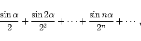
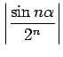
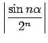
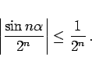
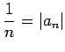

Inhalt Index DeskTop Bronstein

 Unendliche Reihen Reihen mit konstanten Gliedern Absolute und bedingte Konvergenz
Unendliche Reihen Reihen mit konstanten Gliedern Absolute und bedingte Konvergenz


Neben der Reihe
(s. Unendliche Reihe und ihre Summe) mit Gliedern, die verschiedene Vorzeichen haben können, wie z.B. in einer alternierenden Reihe, wird auch die Reihe
betrachtet, deren Glieder die Absolutbeträge der Glieder der Reihe (7.32a) sind.
Wenn die Reihe (7.32b) konvergent ist, dann ist es auch die Reihe (7.32a). In diesem Falle spricht man von der absoluten Konvergenz der Reihe (7.32a). Wenn die Reihe (7.32b) divergent ist, dann kann die Reihe (7.32a) entweder auch divergent oder konvergent sein. Im letzten Falle spricht man von der bedingten Konvergenz der Reihe (7.32a).
| Beispiel A |
|
Die Reihe |
|  | (7.33a) |
in der  eine beliebige konstante Zahl ist, konvergiert absolut, da die Reihe mit dem absoluten Glied  konvergiert. Dies zeigt ein Vergleich mit der geometrischen Reihe (7.15):
eine beliebige konstante Zahl ist, konvergiert absolut, da die Reihe mit dem absoluten Glied  konvergiert. Dies zeigt ein Vergleich mit der geometrischen Reihe (7.15):
|  | (7.33b) |
| Beispiel B |
|
Die Reihe |
konvergiert bedingt, wie (7.36b) und ein Vergleich mit der divergenten harmonischen Reihe (7.16) zeigen, die das allgemeine Glied  hat.